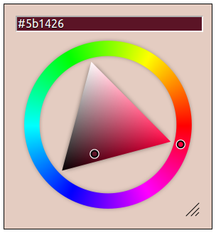

Basic color picker usage. Inline mode, with all default options.
'; $html .= '

Inline mode, small, non-resizable.
'; $html .= '

Static mode, color preview in input element.
'; $html .= '

'; $html .= 'Sample integration with jQuery-UI dialog.
External controls in side panel with multiple color modes.
'; $html .= '

Sample integration with jQuery-mobile dialog.
'; $html .= '